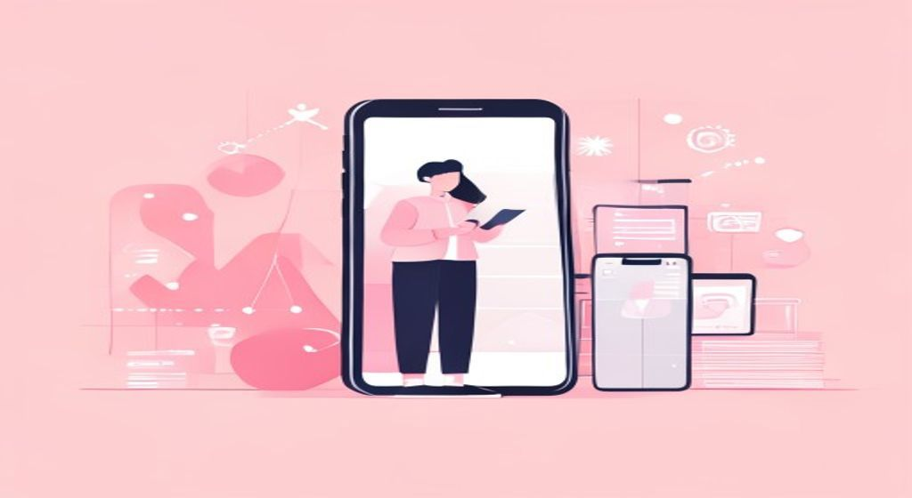
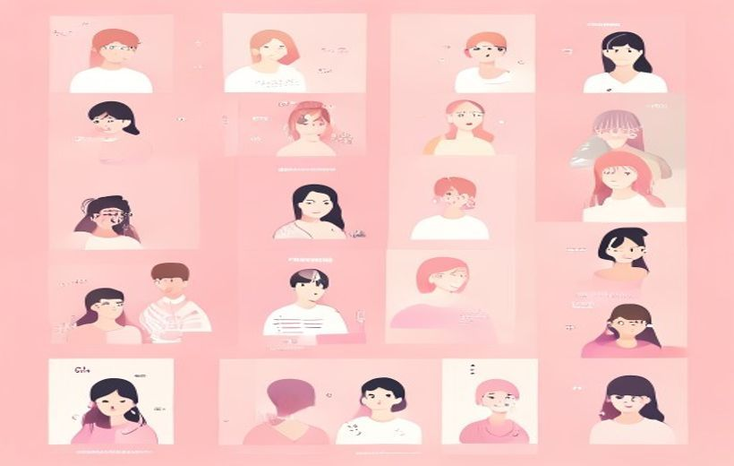

Qué red tiene qué público, cómo funciona el plan POEM en la práctica y la diferencia clave entre crecer de forma orgánica o pagando por llegar.

Cada red social tiene su público y su lenguaje.
Las redes sociales son ecosistemas distintos: elegir la correcta, combinar contenido propio con anuncios pagados y entender cómo el algoritmo influye en la decisión de compra — eso es el marketing en RRSS.
🧠 Los conceptos
Despliega cada tarjeta, léela con calma y márcala como entendida. La barra de arriba irá subiendo.
Las redes sociales no son solo sitios para chatear: son ecosistemas cognitivos donde información, entretenimiento y consumo se mezclan. El usuario no siente que le están vendiendo algo — y eso es precisamente lo que las hace tan poderosas.
Tres efectos clave que producen sobre el comportamiento:
Ecosistemas cognitivos — «las plataformas sociales actúan como ecosistemas cognitivos donde información, entretenimiento y consumo convergen». La exposición constante a contenidos «que no se perciben como publicidad explícita» transmite valores, estilos de vida y aspiraciones que influyen en la evaluación de productos y servicios.
Prueba social y reputación digital — los estímulos visuales en redes «activan atajos heurísticos que desplazan la experiencia previa hacia la prueba social y la reputación digital» (López-Martínez et al., 2018).
Familiaridad afectiva y disponibilidad mental — «la exposición repetida a microhistorias genera familiaridad afectiva y disponibilidad mental que antecede la preferencia de marca» (Campines, 2023).
Cada red tiene su propio idioma, su propio público y su propio momento en el viaje del consumidor. Publicar lo mismo en todas no funciona.

Perfiles por plataforma: IG, TikTok, LinkedIn, X, YouTube.
| Plataforma | Público típico | Formato estrella | Para qué marca sirve | Momento del viaje |
|---|---|---|---|---|
| 18-44, lifestyle | Reels, Stories, UGC curado | Moda, cosmética, restaurantes, viajes | Inspiración, preferencia | |
| TikTok | Gen Z y Millennials (13-30) | Vídeo vertical nativo, Spark Ads | Marcas jóvenes, tendencias, FMCG | Descubrimiento, consideración |
| Profesionales 25-55, decisores B2B | Posts expertos, webinars, documentos | Software, consultoría, formación, RRHH | Consideración, reputación | |
| X (Twitter) | Líderes de opinión, 25-45 | Hilos, clips breves, promoted trends | Medios, tecnología, política, marcas de actualidad | Awareness, gestión de crisis |
| YouTube | Audiencias mixtas (universal) | Tutoriales, reseñas, vídeo largo + Shorts | Electrónica, formación, automóvil, belleza | Evaluación, posventa |
| 35-65+, familias | Vídeo corto, carrusel, grupos | Comercio local, servicios, eventos | Descubrimiento, conversión local |
Ecosistema propio con códigos expresivos — «cada plataforma configura un ecosistema propio donde convergen códigos expresivos, algoritmos de distribución y comunidades con hábitos diferenciados. Comprender su topología equivale a descifrar los lenguajes de visibilidad y pertenencia que condicionan la eficacia persuasiva».
Rasgo dominante · perfiles propensos · momento del viaje — columnas oficiales de la tabla del PDF (apdo. 1.8). Rasgos dominantes literales: Instagram = «estética aspiracional», TikTok = «descubrimiento algorítmico», YouTube = «profundidad y búsqueda», LinkedIn = «autoridad profesional», X = «conversación pública», Facebook = «comunidad y utilidad local», WhatsApp Business = «canal owned relacional».
El modelo POEM organiza todos los medios de una marca en tres capas que trabajan juntas — no por separado. En redes sociales, cada capa tiene un papel concreto:
| Capa POEM | Qué es en RRSS | Ejemplos |
|---|---|---|
| Owned (propio) | Lo que controlas: tu cuenta, tu contenido | Posts en Instagram, vídeos de YouTube, historias de marca en TikTok |
| Earned (ganado) | Lo que consigues sin pagar: menciones, UGC, viralidad | Reseñas, shares, reels de clientes, hashtags espontáneos |
| Paid (pagado) | Anuncios que pagas para ampliar alcance | Shopping Ads en Instagram, Spark Ads en TikTok, Promoted en LinkedIn |
Cómo se construye el plan POEM paso a paso:
Arquitectura interdependiente / portafolio interdependiente — «un plan estratégico basado en el modelo POEM integra activos Propios (Owned), Ganados (Earned) y Pagados (Paid) como un portafolio interdependiente que distribuye riesgos y maximiza la eficiencia por canal» (Campines, 2023). «El éxito no depende de la magnitud de la inversión, sino del grado de integración funcional y semántica entre los canales».
Dinámica circular entre capas · efecto de refuerzo mutuo — los contenidos propios se diseñan como nodos que activan conversación; «el Earned emerge como eco legítimo; el Paid apunta con segmentación a audiencias frías para acelerar pruebas y capturar demanda latente». «La eficacia del Paid se eleva cuando se alinea con activos propios y se apoya en la validación ganada».
El POEM como máquina de aprendizaje estratégico — en su versión madura «trasciende el esquema de medios para convertirse en un marco de pensamiento sistémico»: Owned recoge comportamiento, Earned ofrece percepción, Paid genera evidencia experimental.
Esta es la pregunta clave del tema: ¿hago contenido orgánico o pago por llegar? La respuesta real es: los dos, pero cada uno tiene su rol.
Alcance orgánico vs pagado.
| Dimensión | Orgánico | Pagado |
|---|---|---|
| ¿Qué es? | Contenido que publicas sin pagar; llega quien lo ve de forma natural | Anuncios por los que pagas para aparecer ante una audiencia específica |
| Coste | Tiempo + producción (sin gasto en medios) | Tiempo + producción + presupuesto de media |
| Alcance | Limitado por el algoritmo (<5-10% de seguidores en IG; ~2% en Facebook) | Predecible y escalable: llegas a quien quieres |
| Audiencia | Solo tus seguidores actuales (y algo de viralidad) | Cualquier perfil con targeting: Lookalike, Custom, retargeting… |
| Velocidad | Lento — meses para ver resultados | Inmediato — ves resultados desde el primer día |
| Confianza | Alta — parece más auténtico | Media-baja — el usuario sabe que es publicidad |
| Ventaja clave | Construye comunidad y reputación a largo plazo | Amplifica y convierte a corto plazo |
| Métrica clave | Engagement rate (interacciones / alcance) | CPM, CTR, ROAS |
Distinción binaria entre contenido orgánico y pagado — el PDF la declara superada: «la distinción binaria entre contenido orgánico y pagado resulta insuficiente. Las estrategias actuales incorporan formatos híbridos que difuminan la frontera».
Planificación paralela e integrada — «la planificación de contenidos y la planificación de medios en social media deben desarrollarse de forma paralela e integrada, ya que la eficacia depende de cómo se coordinan los contenidos owned con el apoyo paid y su capacidad de generar earned media».
La frontera entre orgánico y pagado se difumina cada vez más. Existen formatos que cogen lo mejor de los dos mundos: la autenticidad del contenido orgánico con el alcance del anuncio pagado.
| Formato híbrido | ¿Qué es? | Plataforma |
|---|---|---|
| Spark Ads | Conviertes un post orgánico (tuyo o de un creador con permiso) en anuncio, manteniendo los likes y comentarios originales | TikTok |
| Branded Mission | Crowdsourcing de creadores: seleccionas los mejores vídeos de usuarios y los conviertes en anuncios | TikTok |
| Partnership Ads | La marca paga para amplificar publicaciones de creadores, siempre con su permiso | Instagram / Facebook |
| Boost / Publicación amplificada | Pagar para que un post orgánico que ya funciona llegue a más gente | Todas |
Formatos híbridos (Owned a Paid) — «los límites se diluyen porque puedes pagar por amplificar contenido de éxito nacido en orgánico». Son «publicaciones amplificadas (boost), Spark Ads, Branded Mission y Partnership Ads», que «mantienen la autenticidad del mensaje mientras optimizan alcance e impacto».
Spark Ads — «el paso de un post orgánico (cuenta oficial o de creador autorizado) a anuncios, preservando likes/comentarios originales».
Branded Mission y Partnership Ads — Branded Mission es «un tipo de crowdsourcing con creadores (User Generated Content): seleccionas sus mejores vídeos y los transformas en anuncios». Partnership Ads (Instagram y Facebook) «permite a las marcas hacer un "boost" pagado de publicaciones de creadores siempre que tenga el OK del mismo».
El gran superpoder de las RRSS para las marcas es poder mostrar anuncios exactamente a quien quieres. Meta (Instagram/Facebook) es el modelo de referencia. Hay cuatro tipos de audiencia:
| Tipo | Cómo se define | Cuándo usarla |
|---|---|---|
| Core audience | Demografía, intereses, comportamiento (ej.: "mujeres 25-35, interesadas en yoga, Barcelona") | Prospección de clientes nuevos |
| Custom audience | Tu propia base de datos (emails, teléfonos hasheados) | Comunicar con clientes existentes |
| Lookalike audience | Perfiles "gemelos estadísticos" de tus mejores clientes | Escalar a audiencias nuevas similares |
| Retargeting | Gente que ya interactuó con la marca (visitó la web, vio el vídeo, añadió al carrito) | Recuperar interesados que no compraron |
Segmentación · audiencias frías · demanda latente — «el Paid apunta con segmentación a audiencias frías para acelerar pruebas y capturar demanda latente». En la capa pagada, la etapa de descubrimiento se trabaja con «audiencias amplias y lookalikes». (Los nombres Core/Custom/Retargeting son la terminología de Meta; el PDF habla de segmentación, audiencias frías y lookalikes.)
Personalización con IA — «la inteligencia artificial amplifica la precisión de la segmentación mediante sistemas de recomendación, automatizaciones conversacionales y creatividades dinámicas que ajustan tono y formato a señales contextuales del usuario» (Bailón Sánchez y Pico Bazurto, 2025).
Internet y las RRSS han roto el embudo de compra clásico. El consumidor ya no recorre el proceso en línea recta — salta, vuelve, pregunta, compara.
| Modelo | Pasos | ¿Refleja lo digital? |
|---|---|---|
| AIDA (clásico) | Atención → Interés → Deseo → Acción | No — es lineal y pre-digital |
| 5As de Kotler | Aware → Appeal → Ask → Act → Advocate | Sí — recoge la conversación digital y la recomendación |
La diferencia clave: en las 5As el cliente no solo compra — se convierte en Advocate (embajador) que recomienda la marca en redes, generando Earned media de forma natural.
Efecto no lineal ni homogéneo — el PDF no nombra AIDA ni las 5As (eso viene del manual de Kotler); la idea la formula así: «el efecto del marketing en redes sobre el comportamiento no es lineal ni homogéneo entre plataformas: emerge de la interacción entre diseño creativo, arquitectura algorítmica, señales sociales y atributos de la audiencia».
Momento del viaje del consumidor — término oficial del PDF para situar cada plataforma en el recorrido: descubrimiento, consideración, inspiración, preferencia, evaluación, posventa, conversión y fidelización.
Redefinición de la decisión — «la influencia del entorno social digital ya no se limita al acto de compra, sino que redefine los modos de sentir, recordar y decidir en la vida cotidiana».
Las RRSS no influyen igual en todos los momentos de la relación consumidor-marca. Esta tabla muestra en qué punto actúa cada mecanismo:
| Variable | Mecanismo RRSS | Métrica clave | Ejemplo |
|---|---|---|---|
| Atención selectiva | Creatividad y congruencia contextual | Tasa de retención en vídeo | Teaser de estreno en Reels |
| Intención de búsqueda | Prueba social y señales de utilidad | Clics a sitio o catálogo | Carrusel con reseñas verificadas de hotel |
| Preferencia | Asociación afectiva y narrativa consistente | Incremento en share of search | Stories vinculando producto con estilo de vida |
| Conversión | Fricción reducida y oferta contextualizada | CTR a checkout, ROAS | Anuncio dinámico con disponibilidad local |
| Lealtad | Refuerzo poscompra y comunidad | Repetición de compra, NPS | Programa de referidos amplificado por UGC |
Variable conductual · mecanismo de influencia RRSS · indicador observable — encabezados oficiales de la tabla del PDF (apdo. 3.3). «Cada variable describe un punto de inflexión en la relación consumidor-marca, desde la atención inicial hasta la lealtad postcompra».
Atención selectiva — «se configura como el primer filtro cognitivo ante la sobrecarga informativa del entorno digital»; su mecanismo es la «saliencia creativa y congruencia contextual», que determina «si un contenido logra interrumpir la inercia del desplazamiento continuo en el feed».
Mecanismos literales del PDF — intención de búsqueda: «señales de utilidad y prueba social»; preferencia: «asociación afectiva y consistencia narrativa»; conversión: «fricción reducida y oferta contextualizada»; lealtad: «refuerzo poscompra y comunidad».
Un buen plan de Social Media tiene dos capas que se sincronizan, no una sola. Aquí está la lógica de cada una:
| Capa Orgánica | Capa Pagada | |
|---|---|---|
| Narrativa | Pilares temáticos: demostraciones de uso, historias de clientes, evidencia de calidad, participación comunitaria | Descubrimiento (audiencias amplias y lookalikes) → Consideración (señales de interacción) → Conversión (catálogos y formatos de baja fricción) |
| Frecuencia | Ajustada a la capacidad creativa real del equipo | Ajustada al presupuesto y a los objetivos de campaña |
| Medición | Engagement rate, alcance, seguidores nuevos | CPM, CTR, CPA, ROAS |
El ciclo de revisión del plan (gobernanza):
Plan detallado en Social Media: orgánico y pagado — «el plan traduce la estrategia en una secuencia operativa que sincroniza contenidos orgánicos y activaciones pagadas por ventanas temporales, audiencias y objetivos, con enfoque de experimentación y aprendizaje continuo».
Narrativa madre y pilares temáticos · arquitectura por etapas · conversación como producto — en la capa orgánica «la narrativa madre se despliega en pilares temáticos»; la capa pagada es una «arquitectura por etapas» (descubrimiento → consideración → conversión); y «comentarios, mensajes directos y reacciones transforman cada punto de contacto en oportunidad de conexión».
Ciclo de revisión y gobernanza del plan — Diagnóstico: detectar «señales fuertes» y «señales débiles»; Decisión: «enfoque en lift incremental, no solo en eficiencia inmediata del clic»; Diseño: «plantear nuevos microexperimentos». «La IA aporta eficiencia, pero la coherencia emocional y ética de la marca solo se sostiene con criterio humano».
📖 Vocabulario del examen
Cómo lo digo fácil → cómo lo llama el PDF (y como saldrá en el examen).
| En fácil | Término oficial del PDF |
|---|---|
| Sitios donde se mezclan información, entretenimiento y compras | Ecosistemas cognitivos donde información, entretenimiento y consumo convergen |
| Ver la marca muchas veces te acaba cayendo bien | Familiaridad afectiva y disponibilidad mental que antecede la preferencia de marca |
| Si mucha gente da like, parece bueno | Prueba social y reputación digital (activan «atajos heurísticos») |
| Cada red tiene su público y su lenguaje | Cada plataforma configura un ecosistema propio con códigos expresivos, algoritmos de distribución y comunidades diferenciadas |
| Las tres capas POEM se refuerzan entre sí | Arquitectura interdependiente / dinámica circular entre capas con efecto de refuerzo mutuo |
| Ya no vale separar orgánico y pagado a secas | La distinción binaria entre contenido orgánico y pagado resulta insuficiente |
| Convertir un post que funciona en anuncio | Formatos híbridos (Owned a Paid): boost, Spark Ads, Branded Mission, Partnership Ads |
| Gente que aún no conoce la marca | Audiencias frías — el Paid las apunta «con segmentación» para capturar demanda latente |
| Lo que te frena el dedo al hacer scroll | Atención selectiva, activada por saliencia creativa y congruencia contextual |
| Los temas fijos del contenido propio | Narrativa madre desplegada en pilares temáticos (capa orgánica) |
| Responder comentarios y DMs es parte del producto | Conversación como producto: cada punto de contacto es oportunidad de conexión |
| Revisar el plan: qué escalar, qué pausar, qué probar | Ciclo de revisión y gobernanza: Diagnóstico (señales fuertes/débiles) → Decisión (lift incremental) → Diseño (microexperimentos) |
🃏 Flashcards
Toca cada tarjeta para girarla. Tapa la definición con la mano y comprueba si te la sabes.
✅ Test rápido
6 preguntas tipo examen. Elige una opción y te corrige al momento con la explicación.
⭐ Preguntas de práctica
La presentación del Tema 3 no incluye diapositiva de Autoevaluación, por lo que se proponen 3 preguntas de práctica basadas en el contenido más relevante para el examen.
| Dimensión | Orgánico | Pagado |
|---|---|---|
| Alcance | Limitado por el algoritmo (~2% en FB, ~5-10% en IG) | Predecible y escalable |
| Velocidad | Lento (meses para ver resultados) | Inmediato |
| Confianza | Alta (percibido como auténtico) | Media-baja (el usuario sabe que es publicidad) |
| Métrica clave | Engagement rate | CPM, CTR, ROAS |
Son complementarios porque el orgánico construye comunidad y reputación a largo plazo, mientras el pagado amplifica y convierte a corto plazo. Con solo orgánico, el alcance es tan bajo que es casi invisible. Con solo pagado, la marca carece de base de confianza y la publicidad pierde efectividad. Los formatos híbridos (Spark Ads, Partnership Ads) son la solución que combina lo mejor de ambos.
La clave: cada plataforma configura un ecosistema propio con códigos expresivos distintos. Publicar lo mismo en todas equivale a hablar inglés en una audiencia francesa — el mensaje no conecta.
ZMOT (Zero Moment of Truth), concepto de Google (2011): antes de comprar, el consumidor ya ha investigado online — lee reseñas, ve vídeos, compara en redes. Las RRSS son el escenario principal de ese momento previo a la decisión.
Impacto en los modelos de decisión:
Resultado: en el entorno digital, las marcas deben estar presentes en todos los momentos del zigzag, no solo en el punto de venta.